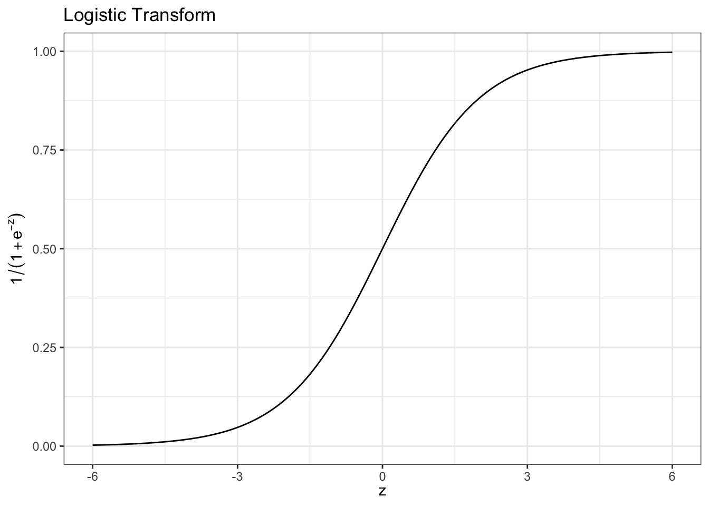
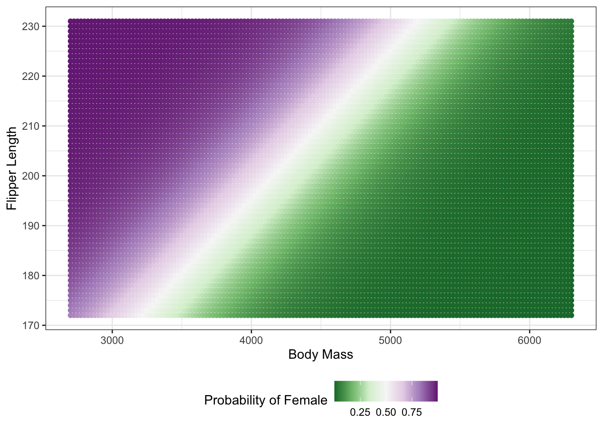

penguins |>
mutate(is_female = (sex == "female")) |> # Construct a logical/Boolean value
summarize(p_female = mean(is_female, na.rm=TRUE)) p_female
1 0.4954955October 26, 2026
\[ $\newcommand{\Xcal}{\mathcal{X}}\newcommand{\R}{\mathbb{R}} \newcommand{\E}{\mathbb{E}} \newcommand{\V}{\mathbb{V}} \newcommand{\P}{\mathbb{P}} \newcommand{\C}{\mathbb{C}} \newcommand{\bbeta}{\mathbb{\beta}} \newcommand{\bone}{\mathbf{1}} \newcommand{\bzero}{\mathbf{0}} \newcommand{\ba}{\mathbf{a}} \newcommand{\bb}{\mathbf{b}} \newcommand{\bc}{\mathbf{c}} \newcommand{\bv}{\mathbf{v}} \newcommand{\br}{\mathbf{r}} \newcommand{\bw}{\mathbf{w}} \newcommand{\bx}{\mathbf{x}} \newcommand{\by}{\mathbf{y}} \newcommand{\bz}{\mathbf{z}} \newcommand{\bX}{\mathbf{X}} \newcommand{\bA}{\mathbf{A}} \newcommand{\bB}{\mathbf{B}} \newcommand{\bC}{\mathbf{C}} \newcommand{\bD}{\mathbf{D}} \newcommand{\bu}{\mathbf{u}} \newcommand{\bU}{\mathbf{U}} \newcommand{\bV}{\mathbf{V}} \newcommand{\bI}{\mathbf{I}} \newcommand{\bH}{\mathbf{H}} \newcommand{\bW}{\mathbf{W}} \newcommand{\bK}{\mathbf{K}} \newcommand{\bR}{\mathbf{R}} \newcommand{\argmin}{\text{arg\,min}} \newcommand{\argmax}{\text{arg\,max}} \newcommand{\MSE}{\text{MSE}} \newcommand{\Fcal}{\mathcal{F}} \newcommand{\Dcal}{\mathcal{D}} \newcommand{\Ycal}{\mathcal{Y}} \newcommand{\Ocal}{\mathcal{O}} \newcommand{\bv}{\mathbf{v}} \newcommand{\Tr}{\text{Tr}} \newcommand{\Ccal}{\mathcal{C}} \]
Outline:
Today, we begin with a review of a classification method you may have seen before logistic regression. Before getting into the guts of logistic regression, let’s look back at (one of) our motivations for (normal) linear regression.
Linear regression typically assumes the world works something like:
\[ Y = \bx^{\top}\bbeta + \epsilon = \epsilon + \sum_{i=1}^p x_i \beta_i\]
That is, \(Y\) is the sum of a ‘noise’ term \(\epsilon\) and a linear signal term \(\bx^{\top}\bbeta\). When we make predictions, we can’t predict \(Y\) directly because of the, by definition, unpredictable \(\epsilon\) term, so we really aim for the conditional mean, \(\E[Y | \bX = \bx] = \bx^{\top}\bbeta\).1 (Recall that MSE aims for the conditional mean.) This motivates breaking the model into two distinct parts:
\[ \begin{align*} \mu &= \bx^{\top}\bbeta \\ Y &\sim \mathcal{N}(\mu, \sigma^2) \end{align*}\]
That is, we combine a linear mean model and then a noise or sampling model taken from the normal (Gaussian) distribution. We see here that this is a (continuous-valued) model not so much because of the mean model, but really because we used a Gaussian noise distribution. Even if \(\bx\) is discrete and \(\bbeta\) are all integers, we could still get any real value out because the normal distribution can produce any real value (albeit mainly with vanishingly small probabilities) regardless of the specific mean and standard deviation.
So how might we extend this set-up to classification? Well, the linear mean model seems fine - just like with regression, it’s appealing to start with linear models - so we really just need to change up the second part, the sampling model. For the binary classification context this is quite simple. We only know one \(\{0, 1\}\)-distribution, the Bernoulli, so let’s just sub that in for the Gaussian.2
\[ \begin{align*} \mu &= \bx^{\top}\bbeta \\ Y &\sim \text{Bernoulli}(\mu) \end{align*}\]
This is close, but there are two things that should make us tread gingerly. The first is the fact that we’ve swapped out the ‘mean’ from the Gaussian with the ‘probability’ parameter from the Bernoulli. This is actually a non-issue because the mean of a Bernoulli is exactly its probability of being \(1\):
\[Z \sim \text{Bernoulli}(p) \implies \E[Z] = 0 * (1-p) + 1 * p = p\]
As an aside, this is an incredibly common trick in statistical computing. We use the ‘mean of 0/1 gives a probability’ trick all the time with logical (TRUE/FALSE) values to estimate probabilities. For instance, in the penguins data set, if we want to estimate the fraction of female penguins in the survey area:
penguins |>
mutate(is_female = (sex == "female")) |> # Construct a logical/Boolean value
summarize(p_female = mean(is_female, na.rm=TRUE)) p_female
1 0.4954955Similarly, if we want to estimate the fraction of chinstrap penguins (those cute little fellows):
penguins |>
mutate(is_chinstrap = (species == "Chinstrap")) |>
summarize(p_chinstrap = mean(is_chinstrap, na.rm=TRUE)) p_chinstrap
1 0.1976744If we’re being very formal about this, we might write \(\E[1_A] = \P(A)\), but we’re not going in this direction in this course. (Self-check: why is the mean always guaranteed to fall in the \([0, 1]\) range and hence be a valid probability?)
Ok - so equating means with probabilities for the Bernoulli is harmless. The other issue is a bit nastier: while the mean can be used as the probability parameter, we can’t use any mean as a probability. In particular, if we have \(\bbeta = -2\) and \(\bx = 1\), we get quickly to \(Y \sim \text{Bernoulli} (-2)\) and a ‘probability’ of \(-2\) is clearly not good news. So we need one more piece to make this good idea actually work.
Our problem is that \(\bx^{\top}\bbeta\) can take any real value unless we put very strong restrictions on \(\bx\) and \(\bbeta\), but we only want to put \([0, 1]\) values into the Bernoulli. So let’s introduce an ‘adapter’ that will ‘squish’ \(\R\) into the \([0, 1]\) range. Once we do this, we’ll certainly have a workable probability parameter and we should hopefully be good to go.
Where can we find a function \(f: \R \to [0, 1]\)? There are many, but the easiest to work with turns out to be \[f(z) = \frac{e^z}{1 + e^z} = \frac{1}{1 + e^{-z}}\] This combines two nice parts: the exponential guarantees us we don’t get anything negative out and because \(1 + e^z > e^z\) for all \(z\), we’re guaranteed to be in the \((0, 1)\) range. Graphically, this function looks like:

As you might have guessed, this logistic function is the one that gives logistic regression its name. Functions of this shape are generally called sigmoidal (roughly ‘s-shaped’): they take \(-\infty\) to 0, \(0\) to \(1/2\), \(\infty\) to 1, and monotonically and smoothly map between.
So this gives us the last piece of our construction:
\[\begin{align*} \R \ni \eta &= \bx^{\top}\bbeta = \sum_{i=1}^p x_i \beta_i \tag{Linear Predictor} \\ (0, 1) \ni \mu &= \frac{1}{1 + e^{-\eta}} \tag{Logistic 'Adapter'} \\ Y &\sim \text{Bernoulli}(\mu) \tag{Bernoulli Sampling Distribution} \end{align*}\]
Because the last term in this model is still Bernoulli, it’s still a \(0/1\)-type of model and suitable for binary classification. This is logistic regression we know and love. Returning to the ever-cited penguins, let’s build a logistic regression model to predict sex from body measurements and species info, using \(0\) for male and \(1\) for female:
Call:
glm(formula = is_female ~ ., family = binomial, data = select(mutate(penguins,
is_female = (sex == "female")), -sex, -island, -year))
Coefficients:
Estimate Std. Error z value Pr(>|z|)
(Intercept) 79.025008 12.115328 6.523 6.90e-11 ***
speciesChinstrap 6.980329 1.574297 4.434 9.25e-06 ***
speciesGentoo 8.353895 2.523542 3.310 0.000932 ***
bill_len -0.613782 0.131008 -4.685 2.80e-06 ***
bill_dep -1.622861 0.332403 -4.882 1.05e-06 ***
flipper_len -0.020774 0.047829 -0.434 0.664046
body_mass -0.005865 0.001083 -5.414 6.15e-08 ***
---
Signif. codes: 0 '***' 0.001 '**' 0.01 '*' 0.05 '.' 0.1 ' ' 1
(Dispersion parameter for binomial family taken to be 1)
Null deviance: 461.61 on 332 degrees of freedom
Residual deviance: 127.11 on 326 degrees of freedom
(11 observations deleted due to missingness)
AIC: 141.11
Number of Fisher Scoring iterations: 7A few things to note here:
family argument as binomial here to indicate we are doing logistic regression. R allows us to ‘aggregate’ 0/1 values into a binomial (sum of IID Bernoulli) response - this is sometimes useful for things like surveys where you ask many (similar) people the same yes/no question. Still, we’re really using a “1-count binomial” / Bernoulli here, consistent with our derivation.R actually uses a second order method (using the first and second derivatives) here to solve the problem more rapidly.Beyond that, this all looks quite similar to regular linear regression. We have a series of coefficients that tell us the ceteris paribus effect of changes. For instance, as the body measurements gets bigger, we are less likely to have a female penguin.3
So why do we call this model linear? Clearly the first part is linear–the linear predictor–but we ‘squish’ it through our logistic adapter so we don’t get a ‘one-to-one’ change in predicted outputs. (In fact, because we have bounded \([0,1]\) outputs, we can’t have a fully linear input/output sort of response.) Two reasons:
If we represent things on the ‘log-odds’ scale, so we look not at \(\hat{p}\), the predicted probability but instead \(\log\frac{p}{1-p}\), things are actually linear.
I personally don’t find this too compelling because I don’t think in terms of log odds.
We can compute a ‘map’ of classifications and see that the boundary is actually linear.
To actually visualize the latter, let’s simplify our model to work with only 2 input variables:
library(broom)
penguins_logistic_2d <- penguins |>
mutate(is_female = (sex == "female")) |>
glm(is_female ~ body_mass + flipper_len, data=_, family=binomial)
penguins_prediction_grid <- expand_grid(
body_mass = seq(2700, 6300, by=25),
flipper_len=seq(172, 231, by=1)
)
penguins_predictions <- augment(penguins_logistic_2d,
newdata=penguins_prediction_grid,
type.predict="response") # Return hat{mu}
ggplot(penguins_predictions, aes(x=body_mass,
y=flipper_len,
color=.fitted)) +
geom_point() +
theme_bw() +
xlab("Body Mass") +
ylab("Flipper Length") +
scale_color_distiller(type="div", palette=3, name="Probability of Female") +
theme(legend.position = "bottom")
We see here that the ‘decision boundary’ - the points where we are truly on the edge and predict \(\hat{p}\) - is linear. This most fundamentally is why we call logistic regression a linear model: the ‘decision rule’ that comes out of the model is linear. Specifically, we might use something like
\[\hat{Y} = \text{Female} \text{ if and only if } 0.03 * \text{Body Mass} - \text{Flipper Length} > -75\]
(Numbers are approximate)
ggplot(penguins_predictions, aes(x=body_mass,
y=flipper_len,
color=.fitted)) +
geom_point() +
theme_bw() +
xlab("Body Mass") +
ylab("Flipper Length") +
scale_color_distiller(type="div", palette=3, name="Probability of Female") +
theme(legend.position = "bottom") +
geom_abline(slope=0.03, intercept=75, color="red4")In our example above, we saw that the boundary line at \(\hat{p} = 0.5\) was linear. But why did we set the line at \(\hat{p} = 0.5\)? In this case (penguin sex guessing), it seems harmless enough, but for more important problems, we might want to set our boundaries elsewhere.
We do so by picking up an idea you might have seen in an economics class: utility maximization (or equivalently, loss minimization). We know from our ‘2x2 table’ that there are 4 possible outcomes: True/False Positive/Negative.
We can assign a cost or a reward for each outcome and try to determine the classification rule that maximizes our reward / minimizes our cost. Let’s suppose I see a Dali etching for sale at a local auction house. The chain of custody / provenance isn’t quite clear, so I don’t know if it’s a ‘true’ Dali or not. I know that if I buy it (let’s say for $500) and get it reviewed by a proper art authenticator (for another $1000), I will know if it is a real Dali or not. If it is a real Dali, I know have a painting I could re-sell (now authenticated) for $5000; if it’s not real, I have an attractive print I could sell for $50. How confident that the painting is real should I be before I purchase it?
Let’s work out our four scenarios:
So let’s balance these out: if the probability of being a real Dali (based on my model) is \(\hat{p}\), purchasing has an expected value of:
\[\E[V_{\text{Buy}}] = \hat{p} * 3500 + (1-\hat{p}) * (-1450) = 5000 \hat{p} -1450\]
Compare this to not purchasing, which always costs me $0 in this scenario. The ‘breakeven’ point is:
\[0 = 5000 * \hat{p} - 1450 \implies \hat{p} = 29\%\]
In this case, I shouldn’t actually set my ‘buy’ decision at 50%, but at the more modest level of 29%. (Conveniently, this is still a linear boundary, now shifted, in logistic regression.)
It is easy to come up with scenarios that produce ‘breakeven’ points at almost any \(\hat{p}\) by simply playing around with the relevant costs. In general, as the payoffs become more positive, we are willing to ‘bet’ more often, while larger costs make us less likely to ‘bet’.
The analysis above relies on a bit of slight of hand: we used it to select a decision rule based on our model probability, but we computed the rewards under ‘actual probability’. These need not be the same!
Put another way, if our model probabilities are not very accurate, a 30% predicted probability doesn’t mean a 30% chance in real life and our decision rule might not be set properly.
We want our model probabilities to be ‘correct’ in the following sense:
and so on for every \(p\). A model that has this property is called well-calibrated and it is a very nice thing to have!
We use a conditional mean here because we aren’t going for the ‘grand average’ \(Y\), but the \(Y\) we expect with those particular \(\bx\) values.↩︎
Recall that the Bernoulli distribution takes only two values, \(1\) and \(0\), with probabilities \(p\) and \(q = 1-p\). That is \[Z \sim \text{Bernoulli}(p) \implies Z = \begin{cases} 0 & \text{ with probability } 1-p \\ 1 & \text{ with probability } p \end{cases}.\]↩︎
This model is to be interpreted like a linear regression model, but the actual values are quite tricky here because of some of the implicit correlations between species and body morphology and the more obvious correlations between pairs of body measurements. Linear-type models are not quite so easy as we might hope…↩︎